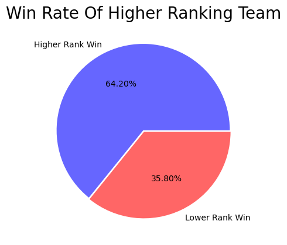

Higher Ranking Team Win Rate
Disclaimer
The game data used here can be several weeks or even months old, since I only looked into the last 100 games per player. The ranks of all players are more recent, that means that players from a game likely didn't have the same rank they do now when they played that game. Better players are more likely to climb in the ranks (thus achieving higher scores in this analysis) and worse players vice versa. To make this more accurate in actually predicting games outcomes I would've needed to analyze games right after they were played, which I didn't have the time or resources to when making this project. After all, this is still an interesting insight into how the ranks correlate with actual game results but should be handled with care when making conclusions.
Similar to the First Blood Win Rate, I looked into wether the team with the higher average rank would win or lose the game. Since ranks are not numerical I tried putting them into numbers by assigning a value for each tier and division. For example, Bronze II would grant 4 points for Bronze and 2 points for II, making it 6 points in total.
def get_rank_points(tier, division):
if (tier == "IRON"):
tier_points = 0
elif (tier == "BRONZE"):
tier_points = 4
elif (tier == "SILVER"):
tier_points = 8
elif (tier == "GOLD"):
tier_points = 12
elif (tier == "PLATINUM"):
tier_points = 16
elif (tier == "EMERALD"):
tier_points = 20
elif (tier == "DIAMOND"):
tier_points = 24
elif (tier == "MASTER"):
return 28
elif (tier == "GRANDMASTER"):
return 29
elif (tier == "CHALLENGER"):
return 30
if (division == "I"):
division_points = 3
elif (division == "II"):
division_points = 2
elif (division == "III"):
division_points = 1
elif (division == "IV"):
division_points = 0
return tier_points + division_points
After adding up all these scores per team, I counted how often the team with the higher ranking score would win in the end. In some games there were players who didn't have a rank assigned to them. This can be the case if that player hasn't played enough games to obtain a rank. Since this didn't happen too often I simply decided to ignore these games and take them out of this statistic.
